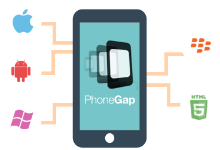
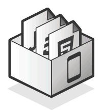

historia

Inicialmente, fue desarrollado por Nitobi bajo licencias de software libre, pero para Octubre de 2011 Adobe anunció oficialmente la adquisición de Nitobi, pasando, así PhoneGap al control del gigante del software, gran interesado en la evolución de HTML5. Esto generó una gran incertidumbre entre los desarrolladores, pues el framework podía pasar a ser una tecnología propietaria, pero en una genial estrategia, Adobe donó PhoneGap a la fundación Apache, conservando de esta forma la integridad libre de PhoneGap.
Yasmin Espinoza- Mayo 2016
Que es PhoneGap?

Es un paquete de librerías que permite empaquetar aplicaciones HTML5 de manera que puedan ser usadas como apps para móviles o Web Apps.
Yasmin Espinoza- Mayo 2016
Caracteristicas

PhoneGap. PhoneGap es un framework para el desarrollo de aplicaciones nativas de sistemas operativos móviles, haciendo uso de tecnologías web comoHTML5, CSS3 y JavaScript. Con PhoneGap es posible desarrollar aplicaciones para los siguientes sistemas operativos:
Android
iOS
Windows Phone
BlackBerry OS
Web OS
Symbiam
Bada